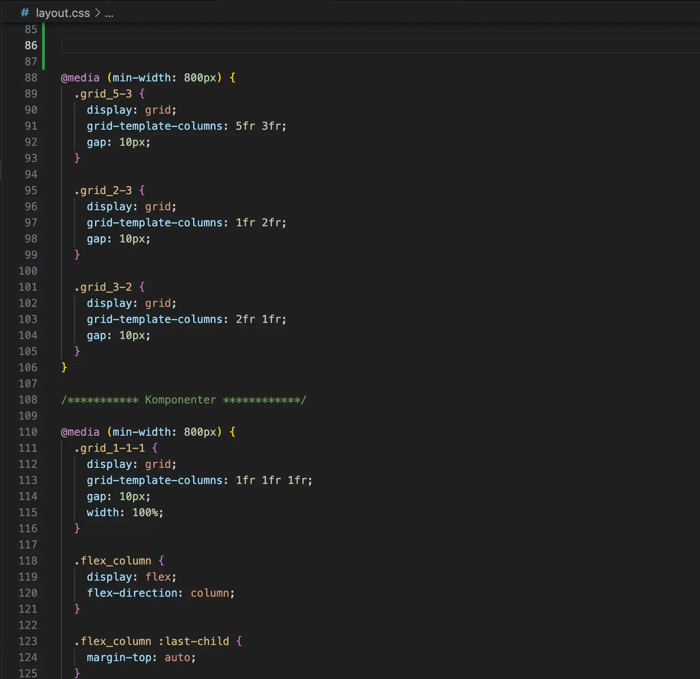
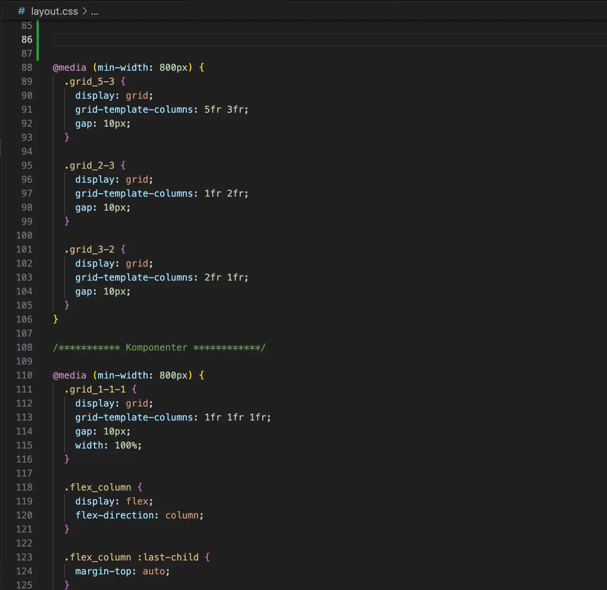

Game Animation

Through learning design, I have honed my ability to create visually engaging and user-centric interactive experiences. I’ve gained skills in conceptualizing game ideas, translating sketches into polished visuals, and developing cohesive design systems for games. My understanding of art principles like composition, character design, and UI layout ensures that each design not only captivates users but also enhances their interaction with the game. These experiences have strengthened my creativity, storytelling, and technical design expertise.
Creating The Sushi Game was an exciting journey that combined creativity, design principles, and technical expertise. The process began with ideation and concept development, where I used sketching, brainstorming, activity diagrams, and state machine diagrams to map out the gameplay and user experience. Moodboards and style tiles helped refine the visual direction, ensuring a cohesive and engaging aesthetic.

01 Ideation and Concept Development
The journey begins with exploring ideas and crafting a concept. I use techniques such as sketching, brainstorming, and generating ideas to develop a solid foundation for the game. Tools like activity diagrams, state machine diagrams, moodboards, and style tiles help visualize and organize the gameplay, aesthetic, and overall feel of the project.
Read more →
 
